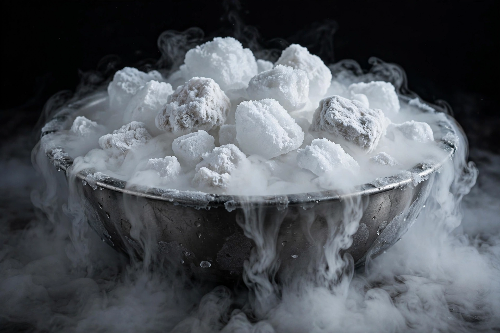

Carbon dioxide
From Wikipedia, the free encyclopedia
Carbon dioxide (chemical formula CO₂) is a colourless gas composed of one carbon atom double-bonded to two oxygen atoms. It makes up about 0.04% (roughly 420 parts per million and rising) of Earth's atmosphere and is central to the carbon cycle: photosynthesis consumes it, respiration and combustion release it.
Carbon dioxide is the principal long-lived greenhouse gas driving modern climate change — atmospheric levels measured at Mauna Loa (the Keeling Curve) have risen from about 315 ppm in 1958. Solid CO₂ is dry ice, which sublimes at −78.5 °C; dissolved under pressure it gives fizzy drinks their sparkle as carbonic acid.

Properties
CO₂ is denser than air, does not support combustion, and is used in some fire extinguishers. Plants, including crops in greenhouses, grow faster with enriched CO₂, while the ocean absorbs roughly a quarter of human emissions, causing ocean acidification.
Sources and sinks
Natural sources include respiration, volcanoes and decomposition; the human-caused rise comes overwhelmingly from burning fossil fuels and deforestation. Forests, soils and oceans are the main sinks.
See also
Carbon · Oxygen · Photosynthesis · Climate change · Greenhouse gas · Chemistry